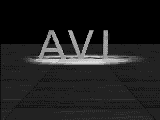

本标记可以用来在主页中嵌入多媒体文本，如：
电影(movie), 声音(sound), 虚拟现实语言(vrml)... ...
体会 <embed> 标记，您需要把 plugin 安装完备。
请注意：embed attributes are different between each plugins.
<bgsound src="sound.wav" loop=3>
<img src="SAMPLE-S.GIF" dynsrc="SAMPLE-S.AVI">

缺省值是 #=fileopen，即在链接到含本标记的页面(如本页)时开始播放 AVI。
mouseover 是指您把鼠标移到 AVI 播放区域之上时才开始播放 AVI。
也可以两者同时设置：<img start=fileopen,mouseover>
另外，用鼠标在 AVI 播放区域点击一下，也将令浏览器开始播放该 AVI。
<img src="SAMPLE-S.GIF" dynsrc="SAMPLE-S.AVI" start=mouseover>
<img src="SAMPLE-S.GIF" dynsrc="SAMPLE-S.AVI" controls>
<loop=infinite> 将循环播放不止。
<img src="SAMPLE-S.GIF" dynsrc="SAMPLE-S.AVI" loop=3>
<img src="SAMPLE-S.GIF" dynsrc="SAMPLE-S.AVI" loop=3 loopdelay=250>
Network Communication Design
http://ncdesign.kyushu-id.ac.jp/
C&P 1994-1996 Yuriko Ienaga v91102@vgenda.kyushu-id.ac.jp